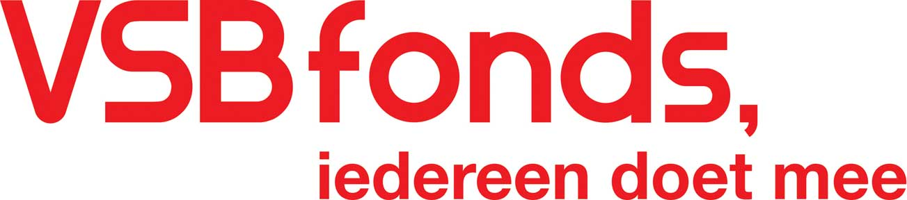
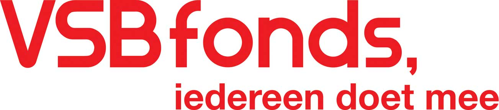

Concerten
Bekijk de lijst met concertdata
Concertreeks 2022: - De grootmeester van het Nederlandse luisterlied: Jules de Corte
Dit jaar is het 25 jaar geleden dat Jules de Corte (1924-1996) overleed. In het verleden zongen we meermaals zijn bekende lied “Ik zou wel eens willen weten…”. Bert van den Brink maakte voor ons daarvan een prachtig arrangement. In dit gedenkjaar wilden wij een uitgebreidere ode brengen, maar door de corona-maatregelen kan de concertreeks helaas pas in 2022 plaatsvinden.
Naast de allerbekendste liederen, is ook zijn andere repertoire erg de moeite waard: de teksten zijn hoogst origineel, ongekunsteld, recht-voor-zijn-raap, de onderwerpen zijn verrassend actueel en de muziek klinkt fris, bedrieglijk eenvoudig, maar o zo ingenieus! Zijn repertoire is erg omvangrijk: meer dan 3000 liederen over zeer uiteenlopende onderwerpen, die romantisch, filosofisch, satirisch van aard kunnen zijn.
Voor onze concertreeks kiezen we uit dit enorme oeuvre een aantal stukken die zich goed laten combineren met ander repertoire waarin we zijn gespecialiseerd: religieuze renaissance-muziek. Daarin wordt niet zelden de schoonheid van de schepping bezongen — maar als de grootmeester van het Nederlandse luisterlied je oren op scherp heeft gezet met al zijn vragen uit “Ik zou wel eens willen weten”, hoe anders klinkt het je dan in de oren?
In samenwerking met Bert van den Brink...
We hebben contact gezocht met Bert van den Brink om samen te werken aan een concertprogramma, waarin we de originaliteit en frisheid van de liederen van Jules de Corte optimaal tot hun recht willen laten komen.
Bert is niet alleen een geweldig arrangeur en een uitnemend pianist, hij is ook kenner van het werk van Jules de Corte en bezorgde een bundel bladmuziek met een bloemlezing uit zijn repertoire. Dat repertoire is omvangrijk: meer dan 3000 liederen over zeer uiteenlopende onderwerpen, die romantisch, filosofisch, satirisch van aard kunnen zijn.
... en Henk Kraaijeveld...
Ook werken we samen met de bekende jazz-vocalist, arrangeur en ensemble-leider Henk Kraaijeveld. Met zijn arrangementen hadden we al veel succes, nu doet hij ook zelf mee, met zijn "warm and beautiful voice" en zijn "relaxed performance" (citaten van een internationale jury). Kortom: de nieuwe concertreeks wordt weer een belevenis!
... en projectzangers met een visuele beperking
Speciaal voor dit Jules de Corte-programma wordt een koor samengesteld van projectzangers met een visuele beperking. Bij de première en het slotconcert is het koor voltallig aanwezig en zingt een deel van het programma mee. Bij de overige concerten versterken een aantal projectzangers The Gents. Op die manier willen we onderzoeken op welke manier het kan werken om te zingen in een gemengde groep van mensen met en zonder visuele beperking. Gewoonlijk is het zicht voor koorzangers onontbeerlijk: je moet de dirigent kunnen zien, de partituur kunnen lezen en de adembeweging van je collega-zangers kunnen waarnemen. Maar voor het zingen zelf is er geen enkel beletsel!
In de geest van Jules de Corte hopen we zo een positieve bijdrage te kunnen leveren aan de participatie-mogelijkheden van mensen met een visuele beperking in het culturele leven.
En natuurlijk doen we de nodige moeite om de concerten toegankelijk te maken, door het programmaboekje aan te bieden in grote letter en in braille. Op verzoek kunnen we ook begeleiding bieden.
We werken samen met de Stichting Bartiméus, de Stichting KUBES en de Stichting Muziek en Visueel Gehandicapten
... met een interessant randprogramma
Bert van den Brink kan als geen ander vertellen over de muziek van Jules de Corte. Hij heeft veel ervaring met het geven van lessen en lezingen hierover. Op een aantal locaties is er voorafgaand aan het concert een lezing van ongeveer 45 minuten.
Op locaties waar de lezing niet wordt aangeboden, nemen we u ook mee in de muzikale wereld van De Corte, maar dan met een kortere inleiding bij de start van het concert. Bert van den Brink, Henk Kraaijeveld en Annemmiek van der Ven vertellen ook tijdens het concert over de liederen en geven achtergrondinformatie.
Boeken?
Voor boekingen kunt u terecht bij onze zakelijk leider en creatief producent: Nanette Dankaarts op telefoonnummer +31 6 46151696
Of bezoeken?
Houd onze site in de gaten voor de data. Hieronder staat de lijst van concerten, maar die kan nog worden aangevuld!
We zijn dankbaar voor de steun van:
De fondsen die ons project financieel mogelijk maken:
 

Concerten ophalen...